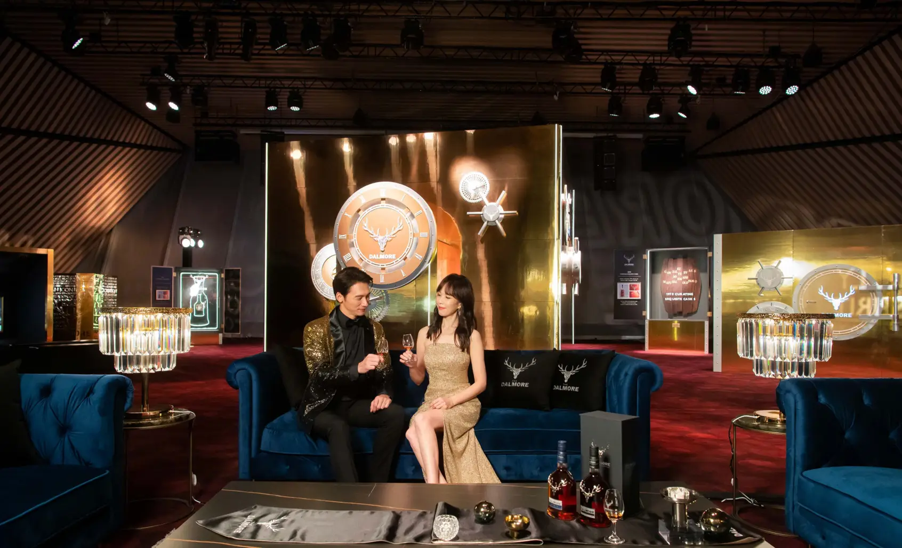
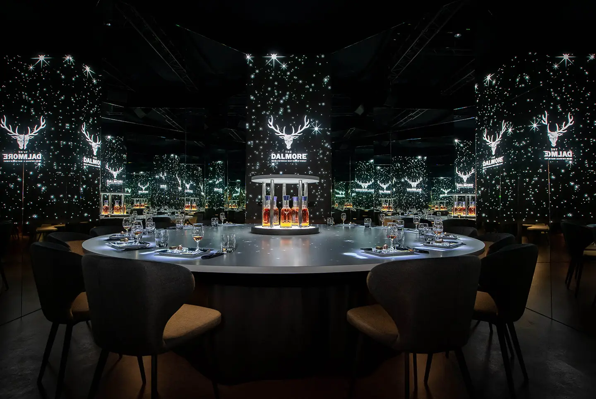
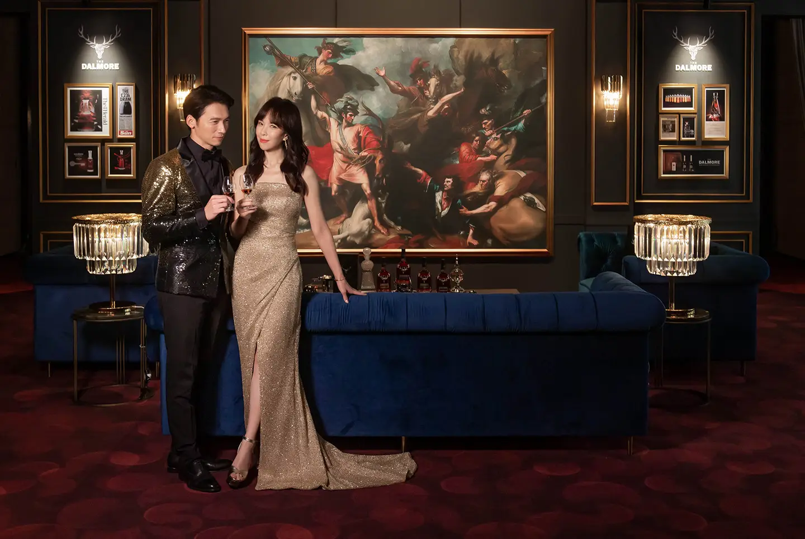
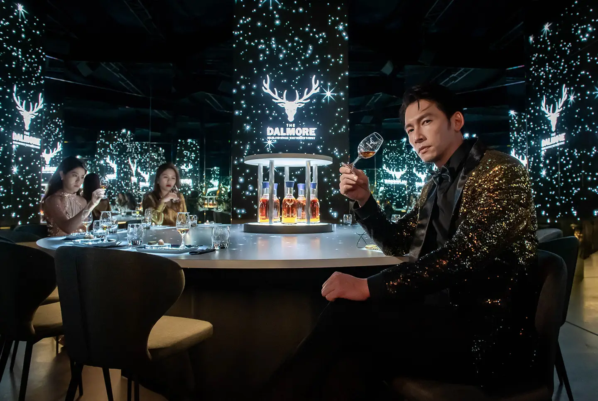

活動大使温昇豪與天心 温昇豪鍾情大摩的尊榮品味 天心欣賞大摩的追求珍稀
「大摩2022鎏金奢展」於01月13日展出至01月23日於台北微風南山藝文中心，限期展出11天。以「老酒銀行」金庫大門及鎏光熠熠的保險櫃，其中存放著來自時光淬鍊的大摩歷史里程碑及珍稀酒液為展覽設計核心概念，演繹大摩近兩百年來的的酒廠歷史、人文精神、極致工藝，深度探究時間沉澱下的非凡價值。此展覽歷經近一年的費心策畫，與蘇格蘭原廠團隊跨時空、跨國界，高規格打造主題式劇場沉浸體驗，結合細緻震撼的動畫鉅作，營造出沉浸式的品酩氛圍、全程由參加者親自啟動特殊互動以感受每個保險櫃展區的內容，現場除了展出全球限量15組的「大摩鎏金時代–五號典藏系列」，還有多款珍稀老酒，總價值近兩千萬。如磅礡史詩般的沈浸式體驗，是大摩獻給台灣消費者的新年禮物，藉由感受大摩時光積累的無盡輝煌，帶領台灣威士忌愛好者探尋大摩的璀璨的故事、經歷深刻而雋永的尊貴體驗，一起見證大摩不凡的時刻。

每個場次都是層峰專屬導覽、尊榮席次限定12位，由專屬品牌大使帶領體驗。邀請大摩威士忌愛好者在沉浸式的氛圍之下品飲大摩3支經典威士忌酒款，有展現經典風格的大摩15年，臻選新品的大摩雪莉12年，以及「世界唯一六桶熟成」的大摩亞歷山大三世，並有機會品飲到珍稀的絕版高年份酒款。邀請貴賓共同見證以歲月譜寫的稀世臻釀，再現大摩璀璨不朽的傳奇。

記者會邀請活動大使温昇豪與天心蒞臨現場，搶先體驗璀璨雋永的大摩鎏金奢展，身為多年品牌好有的溫昇豪分享：「品飲威士忌是個人形象的投射，也是生活品味的連結，我一直都很欣賞大摩透露的經典沉穩卻蘊含無盡珍稀的形象，它就像一個內斂低調卻難掩高尚氣質的男子典範，也是期許自我邁進的目標。」首次受邀出席的天心形容自己像是進入大摩的時光走廊，走過大摩的重要時刻里程碑，她直言：「鑲著12支鹿角的鹿首皇室徽章，欣賞榮光傳承頂尖工藝，傾注心血打造珍稀鉅獻。威士忌隨著時間，不僅增加了醇厚的層層風味，也承載了蒸餾廠在不同的時間下訴說的故事，而我也感受到大摩時光積累。」

律政職人雙拍檔變身大摩威士忌品酩鑑賞家
記者會邀請活動大使温昇豪與天心蒞臨現場，搶先體驗璀璨雋永的大摩鎏金奢展，身為多年品牌好有的溫昇豪分享：「品飲威士忌是個人形象的投射，也是生活品味的連結，我一直都很欣賞大摩透露的經典沉穩卻蘊含無盡珍稀的形象，它就像一個內斂低調卻難掩高尚氣質的男子典範，也是期許自我邁進的目標。」首次受邀出席的天心形容自己像是進入大摩的時光走廊，走過大摩的重要時刻里程碑，她直言：「鑲著12支鹿角的鹿首皇室徽章，欣賞榮光傳承頂尖工藝，傾注心血打造珍稀鉅獻。威士忌隨著時間，不僅增加了醇厚的層層風味，也承載了蒸餾廠在不同的時間下訴說的故事，而我也感受到大摩時光積累。」

對於這次體驗「大摩2022鎏金奢展」，天心形容自己像是進入大摩的時光走廊，走過大摩的重要時刻里程碑，她直言：「我感受到大摩不斷追求珍稀的精神，如同時間之於威士忌而言，一如珍稀至寶。在拍戲過程中，我們也會常常會面對現實與理想的矛盾或是衝撞，而現在我更會想要選擇將時間花在追求珍稀。同時我對於大摩威士忌追求極致工藝的精神非常印象深刻，就像我近年的戲劇作品，挑戰了很多不同的腳色，不管是一把青、最佳利益、俗女養成記中的每一個角色，我都希望將每個角色發揮到淋漓盡致。」
在「大摩2022鎏金奢展」沉浸式的氛圍的品酩中，發現兩人都有各自喜好的酒款，天心獨愛大摩雪莉三桶12年，認為風味圓潤甜美，帶來温醇的堅果甜香。「這酒款很特別，有超越年份的高貴風味。經解說知道原來是因為其雪莉桶不只Oloroso 陳年珍稀雪莉酒，還有Pedro Ximénez（PX）極甜雪莉酒浸潤而成。」她也提到自己平常跟三五好友聚會時，就會開一支威士忌與大家分享，一邊慢慢品酩，一邊聊天話家常。「以威士忌來說，尤其是冬天，是非常對味的季節，天冷到時候，一口就能感到暖全身。」
The Dalmore Decades 大摩鎏金時代 再創蘇富比拍賣傳奇 110萬美元落槌
以「老酒銀行」盛譽享遍全球酒饕的大摩威士忌酒廠，自1839年創立，一百多個年頭以鑲著「12支鹿角的鹿首皇室徽章」榮光傳承頂尖工藝，一直堅持以時光淬鍊完美，造就永恆的珍稀，並以製作世界最高端威士忌的初心，邁進一個又一個十年，不斷推出令人心之嚮往的傳奇酒款並屢屢創下知名拍賣會的最高拍價紀錄。但大摩並沒有停下腳步仍不斷的追求卓越，首席釀酒師理查・派特森（Richard Paterson）親選古老酒窖中，具有蘇格蘭歷史和酒廠時刻標誌的橡木桶，創造了本次的大摩全新系列「The Dalmore Decades 大摩鎏金時代」，其展現了大摩對於威士忌的熱情、奉獻精神與卓越工藝，連結過去、現在與未來，完整呈現大摩時代的巔峰之作。
2021年，大摩震撼的發布「大摩鎏金時代 - 六號典藏系列」（The Dalmore Decades - No. 6 Collection)，為唯一成套六瓶含1951年、1967年、1979年、1980年、1995年、2000年橫跨6個十年的時光窖釀，在10月舉辦的香港蘇富比秋季拍賣會達到110萬美元（約3,300萬新台幣）落槌價，打破蘇富比威士忌迄今拍賣紀錄，過程由香港、台灣及英國的買家競相出價，得標者為一名亞洲收藏家，獲得此套蘇富比亞洲最高價值的「大摩鎏金時代 - 六號典藏系列」。自2010年大摩64年「Trinitas」創下世界上第一款價格突破六位數價格壁壘的威士忌後，大摩已然成為拍賣市場炙手可熱的威士忌品牌。以經典對白「一滴都不能浪費」出現在電影《金牌特務》的大摩62年，2017年在佳士得拍賣會以9萬2千英鎊（約350萬新台幣）落槌。三年後，2020年5月，兩瓶大摩62年在蘇富比線上拍賣會，各拍得26萬6,200英鎊（約1,013萬新台幣），超過了全球最古老干邑的拍賣金額。這場「大摩鎏金時代」成套拍賣所得，將全數投入與蘇格蘭首家設計博物館V&A Dundee的合作計畫，作為該機構與全球最尊貴單一麥芽威士忌品牌長達四年的合作見證。
大摩酒廠自1839年創立，一百多個年頭以鑲著「12支鹿角的鹿首皇室徽章」榮光傳承頂尖工藝，一直堅持以時光淬鍊完美，造就永恆的珍稀，並以製作世界最高端威士忌的初心，邁進一個又一個十年，不斷推出令人心之嚮往的傳奇酒款並屢屢創下知名拍賣會的最高拍價紀錄。但大摩並沒有停下腳步仍不斷的追求卓越，首席釀酒師理查・派特森（Richard Paterson）親選古老酒窖中，具有蘇格蘭歷史和酒廠時刻標誌的橡木桶，創造了本次的大摩全新系列「The Dalmore Decades 大摩鎏金時代」，其展現了180年來大摩的激情、奉獻精神與專業工藝，連結過去、現在與未來，完整呈現大摩時代的巔峰之作。
老酒銀行，大摩威士忌穩座「蘇富比拍賣之王」
自1839年成立以來，大摩從未停下探索卓越威士忌的腳步，而「大摩鎏金時代 - 六號典藏系列」的拍賣紀錄僅僅只是漫長歷史當中最新的一座里程碑。2010年，大摩64年「Trinitas」是世界上第一款價格突破六位數價格壁壘的威士忌，而當時僅生產了三瓶，時至今日，據傳每瓶價值超過16萬美元（約446萬新台幣）。在2017年，大摩創下三次高價話題：第一、大摩首席釀酒師珍藏系列「Dalmore Paterson Collection」以100萬英鎊賣給一位年輕的中國收藏家，成為有史以來最為昂貴的威士忌系列；第二、阿姆斯特丹史基浦機場售出一瓶25萬美元（約700萬新台幣）的「大摩光輝1926」（The Dalmore Brilliance 1926），創下威士忌免稅市場的最高紀錄；第三、「大摩62年Drew Sinclair」在佳士得拍賣會以9萬1,650英鎊（約350萬新台幣）落槌。三年後，2020年5月，兩瓶大摩62年在蘇富比線上拍賣會以預估價兩倍多的高價，各拍得26萬6,200英鎊（約1,013萬新台幣），超過了全球最古老干邑的拍賣金額。2019年與世界名廚馬西默．博圖拉（Massimo Bottura）合作開發「大摩 L'Anima 49年」，在蘇富比以10萬8,900英鎊（約414萬新台幣）出售並捐贈給馬西默創立的零剩食非營利組織「Food for Soul」。
大摩已然成為「創高價紀錄」的頂端威士忌代名詞，加上此次拍賣的「大摩鎏金時代 - 六號典藏系列」，大摩在過去十余年曾有過多次令人矚目的拍賣紀錄，這也表示人們對於高端威士忌日益增長的購買欲望。大摩為近兩年（2020-2021）全球烈酒品牌中增長最快的品牌，根據英國諮詢公司萊坊（Knight Frank）發布《2020年財富報告》（Wealth Report 2020）中顯示，大摩價值增長高達582%，使稀有威士忌成為消費者最有利可圖的投資之一。
理查・派特森分享道，「大摩是最早『預見』老酒時代的酒廠，1870年代後期，酒廠創辦人安德魯．麥肯錫不惜成本開始窖藏數十年的原酒，人們都認為他瘋了！當時市面上多是只陳年兩、三年的威士忌。」麥肯錫家族的勇氣基因延續百年，成為守護蘇格蘭威士忌產業的「老酒銀行」。因為這樣的遠見胸懷，大摩酒廠珍藏市值難以估算的超高年份威士忌，每一次釋出，總能形成一股巨大的拍賣旋風。
尚格酒業董事長奚大寧表示，「大摩擁有全蘇格蘭最罕見珍貴的威士忌老酒，這次拍賣對收藏家、投資者和品鑒者來說都極讓人期待。這一套大摩鎏金時代六號典藏系列，是對大摩非凡歷史的紀念，更是酒迷們收藏大摩老酒的難得機會。」蘇富比的烈酒專家強尼・富勒補充道，「大摩酒廠是威士忌行業的標竿，此次拍賣的酒款系列囊括了大摩所代表的一切。迄今為止，高端威士忌市場上，它同樣也囊括了藏家所追求的酒款關鍵要素。而拍賣最終如此成功，也充分說明了我們在過去的兩年以來，洞察了全球範圍內對威士忌的需求。」
| 酒款 | 時間 | 價格 | 通路來源 |
|---|---|---|---|
| 大摩鎏金時代六號典藏系列 | 2021年 | 110萬美元（約3,300萬新台幣） | 蘇富比 |
| 大摩62年The Mackenzie | 2020年 | 26萬6,200英鎊（約1,065萬新台幣） | 蘇富比 |
| 大摩62年The Cromarty | 2020年 | 26萬6,200英鎊（約1,013萬新台幣） | 蘇富比 |
| 大摩 L’Anima 49年 | 2019年 | 10萬8,900英鎊（約436萬新台幣） | 蘇富比 |
| 大摩62年Drew Sinclair | 2017年 | 9萬1,650英鎊（約420萬新台幣） | 佳士得 |
| 大摩光輝1926 | 2017年 | 25萬美元（約750萬新台幣） | 機場免稅 |
| 大摩首席釀酒師珍藏系列 | 2017年 | 100萬英鎊（約4,000萬新台幣） | VIP |
| 大摩64年 | 2010年 | 16萬美元（約480萬新台幣） | VIP |
*貨幣換算根據當年歷史匯率
大摩鎏金時代，演繹大摩璀璨篇章
「大摩鎏金時代」為大摩首席釀酒師理查・派特森（Richard Paterson）親選古老酒窖中，具有蘇格蘭歷史和酒廠時刻標誌的橡木桶，展示了180年來大摩的激情、奉獻精神與專業工藝，包含千禧年第一瓶蒸餾的威士忌、以及兩款極罕見的麥肯錫時代雪莉桶重聚，代表酒廠的創意能量。「在過去的50年裡，我目不轉睛悉心照料大摩最稀罕、最高級別的老酒，走遍世界各地採購最優秀的橡木桶，為它們標上特殊的歷史意義。」百年來，大摩守護窖中的蘇格蘭古老原酒寶藏，再由理查・派特森耗半世紀之心力，連結過去、現在與未來，「大摩鎏金時代」的誕生，便是代表六場大摩時代的巔峰之作。
-
The Dalmore Decades 1951──Royal Heritage (皇家榮耀)：60年威士忌，大摩有史以來最古老的威士忌之一，也是麥肯錫時代最後蒸餾的威士忌。
-
The Dalmore Decades 1967──Expertly Composed Spirit (蒸餾之魂)：53年威士忌，4座擴增成8座蒸餾器，現今蒸餾室的啟動初年。
-
The Dalmore Decades 1979──Curating Exquisite Casks (稀世珍桶)：40年威士忌，向長期合作的西班牙雪莉酒名莊Gonzalez
- Byass致敬。
-
The Dalmore Decades 1980──Unbroken Chain of Visionaries(繼承榮耀)：40年威士忌，紀念傳奇首席釀酒師理查・派特森進入大摩服務，並接受最後的麥肯錫家族指導。
-
The Dalmore Decades 1995──The Creation of an Icon(勇敢開創)：25年威士忌，紀念大摩在90年代推出標誌性的極簡鐘型酒瓶，蜿蜒曲線呼應著蒸餾器的豐滿形狀。
-
The Dalmore Decades 2000──Into the New Millennium(千禧時代)：20年威士忌，第一家在第三千禧年從蒸餾器擷取全新烈酒的蘇格蘭釀酒廠，正式見證午夜後的三分鐘。
除了全球僅此一套、在今年香港蘇富比拍出110萬美金創紀錄的成套六瓶「大摩鎏金時代 - 六號典藏系列」，大摩也為收藏家發布全球限量15套、每套五瓶的「大摩鎏金時代 – 五號典藏系列」 (含1967、1979、1980、1995、2000)，瓶上均有專屬編號並展示在奢華質感底座，將透過全球最頂尖的零售商獨家銷售，台灣限量一套，定價為840萬新台幣。此外，全球限量25套、每套四瓶的「大摩鎏金時代 – 四號典藏系列」(含1979、1980、1995、2000)，台灣限量兩套，定價為一套420萬新台幣。